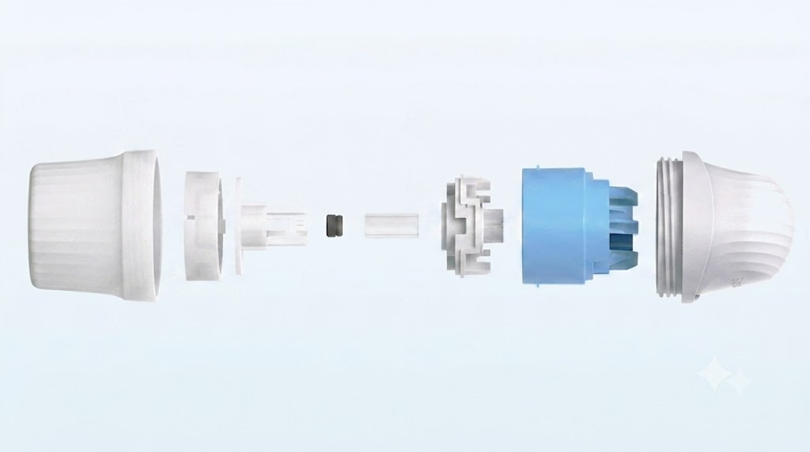
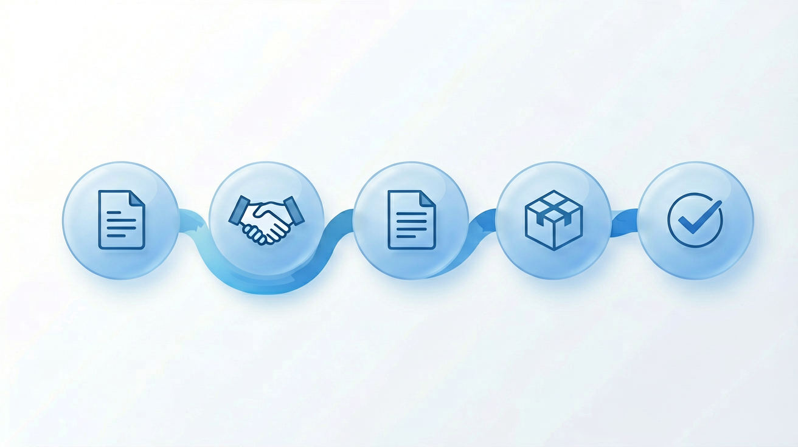
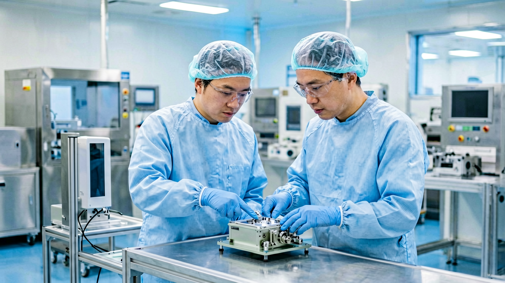

Are you looking for a more flexible, lower-cost way to enter the Continuous Glucose Monitor (CGM) market? In an increasingly competitive diabetes management landscape, the traditional OEM model often comes with heavy import tariffs and rigid Minimum Order Quantities (MOQs). Building your own continuous glucose monitor from the ground up takes years and significant investment. That's where the CGM SKD model comes in, allowing you to launch your own CGM brand with tax advantages and lower cost within 6 to 12 months.
Having worked directly with a variety of healthcare providers and distributors worldwide on CGM SKD projects, we know the questions that matter most when you're evaluating this model. Let's get started.

What does CGM SKD mean?
CGM SKD stands for "Continuous Glucose Monitor Semi-Knocked-Down." It means that a CGM product leaves the original manufacturer's factory partly assembled instead of fully finished. The manufacturer builds and tests the core components, then ships them to your business where your staff complete the final steps: assembly, packaging, branding, and regulatory paperwork, all in your own market. Doing this lets your finished product qualify as locally made, which can open doors to government tenders, tax incentives, and lower import duties, while still carrying your own brand name.
It is different from a fully finished, ready-to-use CGM, and different from a fully knocked-down (CKD) kit where almost every part still needs to be put together on your end. Instead, SKD sits somewhere in the middle. Enough is done at the factory to keep things simple, but enough is left for your business to control branding and meet local rules.
What is a CGM SKD kit? Definition and core components
Picture ordering a bicycle online. It shows up with the frame, wheels, and handlebars already built and tested, but you still need to bolt them together before you can ride it. A CGM SKD kit works the same way. The tricky engineering is done at the factory — electrode fabrication, membrane coating, cytotoxicity testing, puncture needle loading, etc. — and your job is the final assembly of 2 to 5 major components.
We, as the CGM manufacturer, ship most of the pieces already made and tested. Your team — whether a distribution partner, a hospital's biomedical department, or a healthcare brand's operations team — then puts on the finishing touches: packaging, labeling, and paperwork, before the product reaches its final user.
The exact configuration depends on the regulatory needs of the regional market, and is often confirmed before a deal is signed. Here's what a typical CGM SKD kit looks like. See the full SKD kit specification on our dedicated page.
Sensor and transmitter
The sensor and transmitter are the electronic heart of the device. They usually arrive pre-calibrated, meaning they're already tested to give accurate readings. But they still need final assembly. In most kits, snap-fit connections make this easy, with an audible click confirming each part is seated correctly.
Adhesive and insertion parts
The adhesive patch and applicator are disposable. They're designed for one-time use, so a fresh set comes with every kit. Because these parts touch the skin directly, your local assembly area needs to stay clean and controlled — typically a cleanroom rated Class 10,000 (ISO 8) or higher.
Packaging and documentation
Manuals and boxes often arrive in a generic, unbranded form. That's actually a good thing. It means your business can add its own language, logo, and instructions without starting from scratch.
Who is CGM SKD for?
Consumer-facing CGM articles almost always assume the reader is a distributor. In reality, at least four types of B2B healthcare businesses use the SKD model, each for a different reason.
Pharmacy chains and retail health networks
Pharmacies are the single largest CGM distribution channel worldwide, generating more revenue than any other sales route. If your business already runs a pharmacy network, simply stocking someone else's CGM brand on the shelf means your margin ends where the manufacturer's begins. SKD lets you assemble and sell your own branded line instead, so the CGM revenue stays inside your business rather than passing through to an upstream brand.
Telehealth and digital health platforms
Hardware and software are converging in the CGM space, with more companies pairing sensors to subscription apps, remote monitoring dashboards, and clinician portals to create recurring revenue. If your business already runs a chronic-disease app or virtual care platform, reselling a competitor's hardware means someone else owns the device layer of your ecosystem. SKD lets you brand your own CGM sensor and pair it to your existing software stack instead.
Health systems and hospital procurement teams
Institutional buyers are becoming a bigger part of CGM demand, especially as national and regional health payers begin covering sensors under chronic-disease benefit programs, similar to steps already taken in Japan and Germany. If your organization handles bulk procurement for patient care, sourcing directly through SKD can secure steadier long-term supply and pricing than routing every order through a third-party reseller.
National and regional health program operators
Governments in several markets are investing directly in diabetes care infrastructure as part of broader healthcare modernization plans, including funding CGM adoption across hospitals and outpatient clinics. Local assembly through SKD can help meet local-content goals while keeping per-unit costs manageable at scale.
Decision tip: If your business fits more than one of these profiles — say a distributor that also wants to bid on government tenders — SKD can usually support both goals at once, since the underlying process is the same. We have worked with many regional distributors to support their tender bidding. Contact us for details.

How does the CGM SKD model work? A step-by-step process
Understanding the SKD workflow helps any B2B healthcare business plan its timeline and budget. Here's the process, step by step.
The CGM SKD model involves component production, quality inspection, kit preparation, shipment, local assembly, branding, and distribution. Each step matters, and skipping one can cause delays or compliance problems. The exact steps can shift depending on your country's rules and the manufacturer you work with.
Decision tip: If you want full control over branding and local regulatory compliance, SKD is preferable to OEM.
Step 1: requirement alignment & feasibility assessment
You share your company profile, target market plan, and available resources. The manufacturer evaluates whether SKD is a realistic fit for your business.
Step 2: NDA & in-depth assessment
Once both sides sign a non-disclosure agreement, you evaluate a sample kit and the manufacturer helps assess local regulatory feasibility.
Step 3: formal agreement
You and the manufacturer define the kit configuration, pricing, minimum order quantity, branding scope, assembly standards, and support boundaries in writing.
Step 4: initial shipment & capability enablement
The manufacturer ships your first SKD kits along with training materials, regulatory documentation, and assembly SOPs (standard operating procedures).
Step 5: local certification & ongoing supply
Your business leads the local regulatory approval process using the documentation provided, then launches. The manufacturer continues to supply components on an ongoing basis as you scale.
Every country has its own rules for medical devices. Regulatory requirements vary by country and must be confirmed with local authorities before you launch. For reference, the FDA provides specific guidance for CGM device classification, and in the EU, CGMs are classified under MDR as Class IIb devices requiring Notified Body involvement.
In one real project, a healthcare business used our SKD model to enter a new market where full imports faced heavy tariffs. By assembling locally, they cut their landed cost by an estimated 15 to 25 percent and shaved roughly two months off their time-to-market compared to importing finished devices. Contact us to discuss how SKD could work for your market.
Key benefits of the CGM SKD model for B2B healthcare businesses
The CGM SKD model offers flexible procurement options, potentially shorter time-to-market, and may reduce total landed costs in markets where local assembly provides tariff advantages. If you prioritize brand control and local compliance, SKD is a strong choice. Results depend on your specific market and setup, so it's smart to run the numbers for your own situation.
Flexible procurement and lower entry barriers
SKD is designed for committed, long-term partnerships. The manufacturer will support you in setting up a local assembly line, training your team, and handing over documentation for registration. In return, they expect a partner with a clear plan, the resources to execute it, and meaningful annual purchase volume.
Branding and localization control
Because packaging arrives in a generic form, your business can customize the box, the app, and the manual to match your brand and your patients' language.
Regulatory and tariff advantages
In some countries, local assembly may qualify your company as locally manufactured, which can simplify product registration and reduce import duties. This can make your final product more competitive on price.
A full support package, not just parts
A good SKD partnership includes more than components. A reliable CGM manufacturer also provides documentation support (performance verification reports, ISO 13485 certificates, clinical study data), software access (a patient or doctor app available via API or SDK), and a quality control framework.
Territory exclusivity
Because SKD partnerships involve real investment on both sides, many manufacturers structure SKD agreements with regional or country-level exclusivity — commonly one partner per country, sometimes up to two — to protect each partner's market position. Ask about this upfront.
One healthcare business we worked with lowered its total landed cost significantly by shifting from finished-goods import to the SKD model. Proof that the savings can be real, not just theoretical.

How to choose a reliable CGM SKD manufacturer?
Picking the right CGM SKD supplier can make or break your launch. Here's what to look for.
Manufacturing capability and capacity
Does the manufacturer own its factory, or do they outsource? Look for a partner with large-scale production capacity, ideally able to produce millions of units a year, so unexpected shortages don't stall your business as you grow.
Quality certifications and compliance
Look for certifications like ISO 13485, which demonstrates a recognized quality management standard. CE marking is different with SKD: since the finished product isn't complete until you assemble it locally, the manufacturer itself doesn't necessarily need a CE mark on file. What matters more is whether they can provide the clinical and technical reports you'll need for your own local registration.
Technical support and training
A good manufacturer won't just ship you a box and disappear. Prioritize manufacturers that offer training for your assembly team and ongoing support — ones that respond quickly when issues come up and are willing to grow the relationship as your volume increases.
Are you ready to be an SKD partner?
Before signing on, honestly assess your own setup. CGM manufacturers typically look for partners who have, or have a clear path to: a valid local medical device license, existing relationships with clinics or pharmacy chains, familiarity with local device registration, and access to a cleanroom for final assembly.
Typical manufacturing prerequisites include:
- Cleanroom — Class 10,000 (ISO 8) or higher, for sensor housing assembly
- Quality management — ISO 13485 certification or an equivalent quality system
- Trained personnel — Basic cleanroom protocol knowledge is enough to start; full assembly training is provided by the manufacturer
Once you've sized up your own readiness, put these six questions on the table before you sign anything:
- What exactly is included in the SKD kit?
- What certifications do you hold?
- Can you provide assembly training?
- What documentation do you supply for local registration?
- Can we start with a pilot order?
- Do you limit the number of SKD partners in a single country?
This checklist comes straight from real supplier audits. It's the same list we'd run through before recommending any partner.
Ready to explore CGM SKD partnerships?
If your business is considering CGM SKD, contact our team to request a sample kit, discuss your market requirements, or explore partnership options. Whether you're a government tender bidder, a healthcare brand, a medical manufacturer, or a distributor, we can help you see the product firsthand, talk through your country's regulations, and connect with our technical team.
Conclusion
The CGM SKD model offers B2B healthcare businesses a flexible, customizable path to market with potentially lower entry barriers, provided a reliable manufacturing partner is chosen. Whether you're bidding on a government tender, launching a healthcare brand, expanding an existing manufacturing line, or building your own product on top of a distribution network, SKD gives your organization room to start small without the heavy costs of building a device from scratch. The key is picking a manufacturer with the right capabilities, certifications, and support.
If you're ready to discuss your specific market, reach out to our team today.
Frequently asked questions
How difficult is it to assemble a CGM SKD kit?
With EverChek, assembly can be very straightforward. Our components use snap-fit mechanisms with an audible click when correctly seated, and we provide detailed instructions, cleanroom guidelines, and training.
What's the difference between CGM OEM and CGM SKD?
With OEM, the manufacturer builds and certifies a fully finished device for you to brand and resell. With SKD, you receive separate components and assemble them locally. OEM is simpler but costs more. SKD is more flexible and can meet Made in Country requirements. Compare all manufacturing models.
Can I customize the branding on a CGM SKD kit?
Yes, most manufacturers allow you to apply your own brand, packaging, and user manual, subject to regulatory approval.
Does the manufacturer provide regulatory support?
Yes. Reliable SKD manufacturers provide technical documentation for your local regulatory application, such as CE registration.
What should I prepare before requesting a quotation?
Prepare your target market, estimated volume, desired customization level, and regulatory requirements.
Can I start with a pilot order?
Many manufacturers allow a smaller pilot order, often in the range of 100 to 500 units, as a first stage to validate the product and your assembly process. Keep in mind this is usually the entry point into a longer-term agreement, not a substitute for one. Most manufacturers expect your business to commit to meaningful annual volume once the pilot succeeds, and that expectation is typically written into the contract upfront.
Can I get market exclusivity on a CGM SKD model?
Often yes. Many partnerships offer regional or country-level exclusivity, commonly one partner per country.